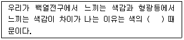
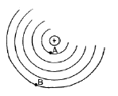
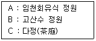
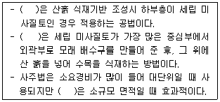
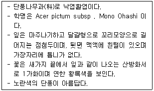
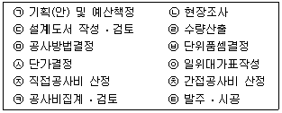
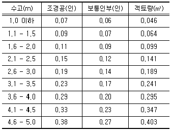
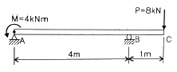
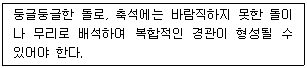
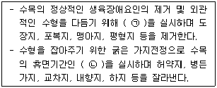

조경산업기사 (2014-09-20 기출문제)
1과목: 조경계획 및 설계
1. 색채가 주는 감정적 효과로서 옳지 않은 것은?
- 명도가 낮은 색은 확장되어 보인다.
- 명도가 높은 색은 가볍게 느껴진다.
- 보라색은 고귀하고 우아함이 느껴진다.
- 난색계열의 채도가 높은 색은 화려해 보인다.
(정답률: 75%)

2. 다음 중 가장 가벼운 느낌을 주는 색은?
- 10R 3/8
- 10R 4/4
- 10R 6/3
- 10R 8/1
(정답률: 80%)
3. 도로망은 도시의 형상을 결정할 뿐만 아니라 도시의 기능수행을 위한 기본적인 시설로서 그 구성체계는 도시의 특징에 따라 다양하다. 다음 중 방사형의 도로에 관한 설명으로 옳지 않은 것은?
- 교통의 흐름은 도시 집중이 강하다.
- 인구 100만 이상 대도시 계획에 적합하다.
- 도심의 기념비적인 건물을 중심으로 사방과 연결된다.
- 중심지를 기점으로 주요간선도로에 따라 도시개발축이 형성된다.
(정답률: 86%)
4. CAD 작업의 특징으로 옳지 않은 것은?
- 도면의 분석, 제작이 정확하다.
- 도면의 수정. 보완이 편리하다.
- 도면의 관리, 보관이 편리하다.
- 도면의 출력과 시간 단축이 어렵다.
(정답률: 95%)
5. 조경설계기준상의 흙쌓기 식재지의 설명으로 옳지 않은 것은?
- 흙쌓기 재료는 수직적으로 동질의 토양을 사용하여 정체수를 방지하고 토양수분의 이동이 쉽도록 한다.
- 기존의 땅 위에 기존 토양보다 투수계수가 큰 토양을 쌓을 경우에는 정체수의 배수가 용이하도록 기존 지반의 표면을 2% 이상 기울게 마무리 한다.
- 식재지의 흙쌓기 깊이가 5m를 넘는 경우, 지반의 부등침하 및 미끄러짐이 우려되는 곳에서는 흙쌓기 높이 2m마다 분리를 위해 기존 기반에 옹벽 구조물을 설치한 다음 흙쌓기 하도록 설계한다.
- 기존의 지반이 기울어진 경우에는 기존 기반과 흙쌓기층의 분리를 위해 기존 기반에 옹벽 구조물을 설치한 다음 흙쌓기하도록 설계한다.
(정답률: 54%)
6. 다음 중 괄호 안의 내용으로 옳은 것은?

- 연색성
- 순응성
- 항상성
- 고유성
(정답률: 85%)
7. 다음 중 계단과 비교한 경사로(ramp)의 특징 설명으로 가장 적합한 것은?
- 비교적 짧은 수평거리가 요구된다.
- 지체 부자유자에게 이용시 힘이 든다.
- 장애인 등의 통행이 가능한 종단 기울기는 1/18 이하로 한다.
- 바닥표면은 광택이 있고, 보행이 자유롭게 표면이 매끄러운 재료를 채용한다.
(정답률: 78%)
8. 다음 중 주택건설기준 등에 관한 규정에 의한 주민공동시설이 아닌 것은?
- 주민운동시설
- 주민휴게시설
- 청소년 수련시설
- 한방병원
(정답률: 89%)
9. 지형분석을 하기 위해 1/50,000축척의 지형도를 이용하려할 때 등고선 5개가 2지점 사이에 걸쳐 나타난다면 2지점의 표고차는? (단, 두지점간지형은일 정한경사이며, 두지점은 다음 그림의 A와 B 이다.)

- 40m
- 60m
- 80m
- 100m
(정답률: 73%)
10. 경관의 우세요소를 좀 더 미학적으로 부각시키고 주변의 다른 대상과 비교가 될 수 있는 우세원칙에 해당하지 않은 것은?
- 대비(contrast)
- 연속(sequence)
- 축(axis)
- 운동(motion)
(정답률: 58%)
11. 현행 법제상의 오픈스페이스(open space) 분류체계 중 도시공원의 구분에 해당하는 것은?
- 유원지
- 묘지공원
- 공공용지
- 운동장
(정답률: 77%)
12. 다음 중 리튼(Litton)d이 제시한 경관의 훼손가능성(landscape's vulnerability)이 높은 지역이 아닌 것은?
- 완경사보다는 급경사 지역
- 산 정상이나 능선 지역
- 단순림보다는 혼효림 지역
- 구심적 경관에서 초점이 되는 지역
(정답률: 75%)
13. 일본의 3대 정원 양식의 발달순서가 옳은 것은?

- C → A → B
- A → C → B
- B → C → A
- A → B → C
(정답률: 86%)
14. 중세 후기에 성곽정원(城廓庭園)의 주요 부분이 아닌 것은?
- 절충원
- 초본원
- 유원(遊園)
- 과수원
(정답률: 61%)
15. 미국에서 도시 미화운동(都市美化運動, city Beautiful Movement)의 계기가 된 최초의 것은?
- 전원도시운동
- 위성도시의 성립
- 콜럼비아박람회(Columbian Exposition)
- 옐로우스톤(Yellow-stone)국립공원
(정답률: 84%)
16. 남미의 향토식물을 적극 활용하였으며, 리오네자네이로에 있는 코파카바나 해변의 프로메나드를 설계한 조경가는?
- 단 카일리
- 벌 막스
- 루이스 바라간
- 크리스토퍼 터나드
(정답률: 71%)
17. 창덕궁 내의 원림 속에 있으며, 옥류천의 북쪽에 자리 잡고 있는 삿갓지붕형의 단칸 모정(茅停)으로 방지방도로 된 것은?
- 관람정(觀纜停)
- 소요정(逍遙停)
- 청의정(淸漪停)
- 청심정(淸心停)
(정답률: 57%)
18. 우리나라에서 공공(公共)을 위해 만들어진 최초의 근대공원은?
- 탑골공원
- 사직공원
- 장충단공원
- 남산공원
(정답률: 92%)
19. 조선시대 궁궐의 침전(寢殿) 후정(後庭)에서 볼 수 있는 대표적인 양식은?
- 정자(亭子)
- 조그만 크기의 방지(方地)
- 풍수지리설에 입각한 금천(禁川)
- 경사지를 이용해서 만든 계단식의 노단( 露檀)
(정답률: 84%)
20. 청나라 때 축조 된 정원 중 이궁의 정원이 아닌 것은?
- 열하피서산장
- 원명원 이궁
- 이화원
- 건륭화원
(정답률: 60%)
2과목: 조경식재
21. 잎은 어긋나기하며 홀수 깃모양겹잎이고, 열매는 협과, 원추형이고 염주상으로 10월경에 성숙, 8월경 황백색 꽃이 아름답고 꼬투리가 특이하다. 예로부터 정자목으로 이용되어왔으며, 녹음식재, 완충식재, 가로수로도 이용되는 수종은?
- 가중나무
- 왕벚나무
- 참죽나무
- 회화나무
(정답률: 78%)
22. 다음 중 4월에 꽃이 피는 방향성의 물푸레나무과(科)식물은?
- Acer palmatum Thunb.
- Prunus mume Siebold & Zucc. For mume
- Lonicera japonica Thunb
- Syringa oblata var. dilatara Rehder
(정답률: 47%)
23. 도시내 생물 서식처 기능을 촉진할 수 있는 녹지공간 특성에 관한 설명으로 틀린 것은?
- 면적 : 소면적 보다는 대면적일수록 좋다.
- 주연부의 길이 : 긴 것보다 짧을수록 좋다.
- 산재 녹지 : 격리보다는 인접하여 위치할수록 좋다.
- 녹지 형태 : 막대형보다는 원형일수록 좋다.
(정답률: 80%)
24. 토양단면에서 부식이 바로 위에 있는 층보다 적고 갈색 또는 황갈색을 띠며 가용성 염기류가 많으며 비교적 견밀한 특징을 구비한 토양층은?
- 모재층
- 용탈층
- 집적층
- 유기물층
(정답률: 67%)
25. 수피에 얼룩무늬가 있어 감상가치가 높은 수종이 아닌 것은?
- Stewartia pseudocamellia Maxim
- Crataegus pinnatifida Bunge
- Pinus bungeana Zucc. Ex Endl.
- Chaenomeles sinensis Koehne
(정답률: 47%)
26. 최소 생존 개체군(MVP) 을 유지시키기 위해 필요한 서식지의 크기(면적)을 무엇이라 하는가?
- 최소보호면적(Minium preservation Area)
- 최소유효면적(Minium Effective Area)
- 최소생존면적(Minium Survaval Area)
- 최소역동면적(Minium Dynamic Area)
(정답률: 54%)
27. 다음 ( )안에 공통으로 들어갈 매립지 복원공법은?

- 성토법
- 사공법
- 사토객토법
- 사구법
(정답률: 86%)
28. 음수는 하층 식생층으로써도 장기간 생육이 가능하며 주위의 경쟁목이 제거되면 즉시 수고생장과 직경생장이 촉진된다. 자연낙지(natural pruning)가 잘 안되어 맨밑에 있는 오래된 가지에도 잎이 살아 있으므로 지하고가 낮고 혼효림을 잘 이루며 높은 임분밀도를 유지할 수 있고 성숙기에 늦게 도달하는 특징이 있다. 다음 중 음수로 분류할 수 없는 것은?
- 비자나무
- 칠엽수
- 굴거리나무
- 버드나무
(정답률: 51%)
29. 다음 설명하는 수종은?

- 복자기
- 단풍나무
- 고로쇠나무
- 신나무
(정답률: 71%)
30. 서울숲을 생태공원으로 재조성하고자 할 때 식재하기에 가장 부적합한 수종은?
- 소나무
- 서어나무
- 종가시나무
- 갈참나무
(정답률: 64%)
31. Berberis koreana의 설명으로 맞는 것은?
- 꽃은 3월에 붉은색으로 핀다.
- 성상은 상록활엽교목이다.
- 우리나라 자생수종이다.
- 줄기에는 가시가 있으며 열매는 흑색이다.
(정답률: 74%)
32. 다음 식물종과 향기가 유발되는 식물기관의 연결이 옳지 않은 것은?
- 생강나무 - 가지
- 분꽃나무 - 꽃
- 계수나무 - 열매
- 로즈마리 - 잎
(정답률: 71%)
33. 다음 중 참나무과(科)에 해당하지 않는 것은?
- 가시나무
- 개암나무
- 너도밤나무
- 상수리나무
(정답률: 56%)
34. 식생(vegetation)을 분류하는 가장 기본적인 단위는?
- 종
- 군집
- 우점도
- 천이
(정답률: 65%)
35. 다음 조경식물의 영양번식에 관한 설명으로 틀린 것은?
- 삽목의 대표적인 발근촉진물질은 옥신(Auxin)이다.
- 삽목은 식물체의 일부를 상토에 꽂아 절단면으로부터 부정근을 발생시키는 방법이다.
- 취목은 분리된 두 식물체의 조직을 유합시켜 하나의 식물체를 만드는 방법이다.
- 분주는 충분히 성장한 조경식물을 포기나누기하여 번식시키는 방법이다.
(정답률: 56%)
36. 다음 중 수목의 잎이 호생(互生)인 것은?
- Cercidiphyllum japonicum
- Cercis chinensis
- Euodia daniellii
- Syringa oblata var. dilatata
(정답률: 50%)
37. 다음 생태적 배식(ecological planting)과 관련된 용어 중 식생천이의 발전과정에 포함되는 것은?
- 식물군락
- 극성상
- 식재수법
- 경관보전
(정답률: 61%)
38. 수목의 활용에 따른 분류 중 녹음용 수종의 조건으로 가장 관계가 적은 것은?
- 가급적 수관이 커야 한다.
- 보행자의 머리에 닿지 않을 정도의 지하고를 가져야한다.
- 수목의 무게를 견딜 수 있는 천근성이어야 한다.
- 여름철에 짙은 그늘과 겨울철에 따뜻한 햇빛을 줄 수 있는 낙엽교목이어야 한다.
(정답률: 77%)
39. 식물의 생활형은 가장 추운 계절에 생존하는 방법으로, 특히 새로 생장이 시작될 눈의 위치에 따라 구분된다. 다음 중 일년생식물에 해당되지 않는 종은?
- 밭뚝외풀
- 돼지풀
- 얼레지
- 주름잎
(정답률: 78%)
40. 우리나라 온대지방의 계절 특성상 녹음수로 가장 적합한 것은?
- Forsythia koreana
- Celtis sinensis
- Pinus koraiensis
- Photinia glabra
(정답률: 53%)
3과목: 조경시공
41. 10m에 대해서 10cm 늘어난 줄자를 사용해서 거리를 측정하였더니 450.2m가 되었다. 실제 길이는 얼마인가?
- 450.2m
- 454.7m
- 459.2m
- 464.7m
(정답률: 59%)
42. 조경공사에 있어서 시방서, 설계도면 등 설계서간의 내용이 상이한 경우 적용순서로 옳게 된 것은?
- 현장설명서 → 공사내역서 → 특별시방서 → 설계도면
- 공사내역서 → 설계도면 → 현장설명서 → 특별시방서
- 설계도면 → 물량내역서 → 공사시방서 → 현장설명서
- 현장설명서 → 공사시방서 → 설계도면 → 물량내역서
(정답률: 73%)
43. 공사발주자가 공사발주를 위한 예정가격을 책정하기 위한 것으로서 실시하는 공사비 산정의 일반과정으로 옳은것은?

- ㉠ → ㉡ → ㉢ → ㉣ → ㉤ → ㉥ → ㉦ → ㉧ → ㉨ → ㉩ → ㉪ → ㉫
- ㉠ → ㉡ → ㉢ → ㉥ → ㉣ → ㉤ → ㉦ → ㉧ → ㉨ → ㉩ → ㉪ → ㉫
- ㉠ → ㉡ → ㉢ → ㉣ → ㉤ → ㉥ → ㉦ → ㉧ → ㉩ → ㉨ → ㉪ → ㉫
- ㉠ → ㉡ → ㉢ → ㉥ → ㉣ → ㉤ → ㉦ → ㉧ → ㉩ → ㉨ → ㉪ → ㉫
(정답률: 72%)
44. 목재의 비중에 대한 설명으로 틀린 것은?
- 목재의 강도와 상관관계를 갖는다.
- 목재실질 만의 비중을 진비중이라고 한다.
- 비중의 크기와 추재율과는 상관관계를 갖지 않는다.
- 목재의 비중은 수종, 산지, 생육상태, 부위에 따라 다르다.
(정답률: 71%)
45. 다음 중 동해, 건습, 온도변화 등의 풍화작용에 저항하는 성질을 가르키는 용어는?
- 내후성
- 내마모성
- 내식성
- 내화학약품성
(정답률: 83%)
46. 옹벽단면의 경제성이 높으며, 높이 6m 이상의 상당히 높은 흙막이 벽에 쓰이는 옹벽은?
- 중력식옹벽
- 캔틸레버 옹벽
- 부축벽옹벽
- 조립식 콘크리트 옹벽
(정답률: 48%)
47. 분말도가 큰 시멘트의 성질에 대한 설명으로 틀린것은?
- 색이 어둡게 되며 비중이 커진다.
- 블리딩이 적고 워커블한 콘크리트가 얻어진다.
- 물과 혼합시 접촉 표면적이 커서 수화작용이 빠르다.
- 풍화하기 쉽고 건조수축이 커져서 균열이 발생하기 쉽다.
(정답률: 50%)
48. 보통 흙 쌓기의 경우 높이 3m 미만으로 대지 조성시 더돋기의 양은 높이의 얼마 정도로 하는 것이 좋은가?
- 3~5%
- 10%
- 20%
- 30%
(정답률: 66%)
49. 수축과 팽윤에 직접 관여하지 않는 목재 수분은?
- 결합수
- 자유수
- 흡착수
- 일시적 모관수
(정답률: 73%)
50. 구조계산은 구조물에 작용하는 모든 외력들이 구조물 상에 어떻게 분포되는가를 조사하는 이른바 외응력(externalstress)에 관한 계산을 하는 것이다. 이때 구조물에 생기는 외응력이 아닌 것은?
- 합력(resultant force)
- 휨 모멘트(bending moment)
- 축 방향력(axis force)
- 비틀림 모멘트(twisting moment)
(정답률: 59%)
51. 다음 중 좋은 품질의 벽돌을 선정하는데 있어 검토사항으로 부적합한 것은?
- 균일한 세립(細粒)조직을 가질 것.
- 흡수율이 크고, 고열을 받아도 이상이 없을 것.
- 균열, 열목, 기포, 소립석 또는 괴상(塊狀)의 석회부분이 없을 것.
- 표면에 나타나는 부분은 평할(平滑)하나 접합부분은 거칠어야 할 것.
(정답률: 59%)
52. 잣나무(H3.0 × W1.5) 10주에 대한 식재비와 객토량을 산출하면 얼마인가? (단, 조경공은 50,000원/인, 보통인부는 35,000원/인이다.)

- 식재비 : 14,400원, 객토량 : 1.89m3
- 식재비 : 144,000원, 객토량 : 1.89m3
- 식재비 : 14,400원, 객토량 : 2.41m3
- 식재비 : 144,000원, 객토량 : 2.41m3
(정답률: 71%)
53. 에로우 네트워크 공정표 중 화살표 아래에 기입하는 내용으로 가장 적합한 것은?
- 작업명칭
- 소요일수
- 작업구간
- 작업의 선후
(정답률: 78%)
54. 비철금속 재료 중 알루미늄에 대한 설명으로 옳지 않은 것은?
- 알칼리에 침식된다.
- 전기와 열의 양도체이다.
- 융점은 640~660℃ 정도이다.
- 열에 의한 팽창계수는 콘크리트와 유사하다
(정답률: 66%)
55. 그림과 같은 내민보의 점 A에 모멘트가 점 C에 집중하중이 작용한다. 지점 B의 단면에 작용하는 굽힘 모멘트의 크기는 몇 kNm인가?

- 4
- 8
- 12
- 16
(정답률: 55%)
56. 건설에서 구조재료용으로 사용되는 플라스틱의 장점에 대한 설명으로 틀린 것은?
- 내수성 및 내습성이 양호하다.
- 공장에서 대량생산이 가능하다.
- 탄성계수가 크고 변형이 작다.
- 적은 중량으로 인해 구조물의 경량화가 가능하다.
(정답률: 77%)
57. 조경공사 표준시방서상의'시공 및 공정관리'에 관한 설명으로 옳은 것은?
- 수급인은 시공계획에 따라 예정공정표를 작성 후 즉시 감독자의 승인을 얻는다,
- 규정시간외 또는 휴일작업을 행할 필요가 있을 경우에는 근로자와 협의시는 사전에 감독자의 승인없이 할수 있다.
- 부적기 식재, 천재지변 등 공사의 지연이 불가피한 경우에는 감독자의 승인없이 공사기간을 연장할 수 있다.
- 공사시행상의 형편에 따라 작업시간의 연장을 감독자가 인정한 때에는 품질확보에 지장이 없는 한 수급인은 그 지시에 따라야 한다.
(정답률: 55%)
58. 다음 설명하는 경관석의 종류는?

- 횡석
- 평석
- 환석
- 와석
(정답률: 68%)
59. 중용열 포틀랜드 시멘트에 대한 설명으로 옳은 것은?
- 장기강도가 작다.
- 한중 콘크리트에 적합하다.
- 수화열을 크게 만든 것이다.
- 댐공사 등의 매스 콘크리트용으로 적합하다.
(정답률: 76%)
60. 골재의 공극률이 30%일 때 골재의 실적률은?
- 0.3%
- 0.7%
- 30%
- 70%
(정답률: 80%)
4과목: 조경관리
61. 중력식 수간주입에 대한 설명으로 옳은 것은?
- 비용이 많이 든다.
- 구멍을 뚫을 필요가 없다.
- 약액의 분산에 문제가 많다.
- 다량의 약액을 주입할 수 있다.
(정답률: 75%)
62. 다음 중 종자뿜어붙이기에 관한 설명으로 옳지 않은 것은?
- 파종 후 6개월 이내에 발아되지 않거나 전면에 고루 발아되지 않고 일부만 발아 되었을 때에는 처음과 동일한 공법으로 재파종하여야 한다.
- 파종면이 건조한 경우에는 종자의 발아를 촉진하고 분사부착물의 침투를 좋게 하기 위하여 1m3당 1~3L의 물을 미리 살포한다.
- 비료는 질소, 인산, 칼리의 성분이 혼합된 복합비료를 사용하되 재료조달 계획 승인시 감독자의 승인을 받은 것을 사용한다.
- 공사의 효율을 위하여 잔디종자를 섬유(fiber), 색소접착제, 비료 등과 물로 혼합하여 고압분사기로 파종하는 잔디조성공사에 적용한다.
(정답률: 59%)
63. 잔디 조성 후 표토층의 부분적인 개량 및 개선방법이 아닌 것은?
- 통기작업(core aerification)
- 로터리 모어(rotary mower)
- 버티컬 모잉(vertical mowing)
- 배토(topdressing)
(정답률: 59%)
64. 석회질 비료의 설명으로 틀린 것은?
- 소석회는 비료용 석회로 가장 많이 이용된다.
- 황산석회는 석고(石膏)라고도 하며, 탄산염이 원인이 되는 알칼리성 토양의 개량에 알맞다.
- 탄산석회는 석회암이나 석회석을 화학적 가공을 통해 만든 것이다.
- 생석회는 산성토의 중화와 토양의 물리적 성질을 개선시키는데 매우 유효하다.
(정답률: 47%)
65. 레크레이션 관리에서 생태 모니터링(Monitoring)의 필요성이라 볼 수 없는 것은?
- 장래 재평가 자료로 활용
- 자연자원의 지속적 이용
- 적정 수용 능력의 판단 자료
- 최대 이용자 확보를 위한 홍보자료 수집
(정답률: 80%)
66. 균근(Mycorrhizae)이 설명으로서 가장 적합한 것은?
- 식물의 뿌리에 조류(Algae)가 붙어있는 형태이다.
- 균사가 식물뿌리에 감염하여 공생하는 특수형태의 뿌리이다.
- 박테리아가 식물뿌리에 침입하여 부식된 형태의 뿌리이다.
- 근류근이 식물 뿌리에 침입하여 질소 고정작용을 하는 새로운 형태의 뿌리이다.
(정답률: 60%)
67. 병의 삼각형 구성 요소에 해당되는 것은?
- 사람
- 환경
- 지역
- 시기
(정답률: 84%)
68. 대기오염의 2차적 오염물질 중에서 주로 PAN(C2H3NO3, peroxyacetyl nitrate)에 의한 피해를 입는 부위는?
- 상피조직세포
- 표피조직세포
- 책상조직세포
- 해면유조직
(정답률: 52%)
69. 다음 중 토양 내 시비방법이 아닌 것은?
- 수간주사법
- 대상시비법
- 윤상시비법
- 선상시비법
(정답률: 85%)
70. 조경 유지 관리의 작업계획을 작성할 때 다음 중 식재지의 연간 작업 회수를 가장 많이 계획해야 하는 작업 종류는?
- 전정
- 제초
- 시비
- 방한
(정답률: 74%)
71. 콘크리트 옹벽이 앞으로 무너질 염려가 있을 때 취하는 조치 중 적당하지 않은 것은?
- 기존 지반의 암질이 좋을 때는 P.C 앵커로서 원지반과 콘크리트 옹벽을 묶어 놓는다.
- 기초의 침하 우려가 없을 때는 옹벽 앞면에 부벽식 콘크리트 옹벽을 설치한다.
- 옹벽 뒷면의 지하수를 배수구멍을 뚫어 콘크리트 옹벽바깥으로 유도시켜 토압을 경감시킨다.
- 저항력이 옹벽 뒷면의 토압에 대한 회전력의 1.1배 이상 되도록 조정한다.
(정답률: 60%)
72. 다음 중 아스팔트 콘크리트 포장시 포장균열의 보수방법 중 틀린 것은?
- 팽창 줄눈공법
- 패칭(patching)공법
- 표면처리공법
- 덧씌우기(overlay)공법
(정답률: 75%)
73. 누런솔잎벌의 연간 발생 세대수와 월동 충태는?
- 년 1세대-알
- 년 2세대 - 성충
- 년 2세대-유충
- 년 1세대 - 번데기
(정답률: 71%)
74. 조경현장에서 작업자가 착용하는 가죽제 발 보호 안전화의 완성품 성능 시험 항목이 아닌 것은?
- 침수시험
- 충격시험
- 내압박시험
- 박리시험
(정답률: 59%)
75. 다음 중 기계적 방제법(mechanical control)이 아닌것은?
- 포살법
- 가열법
- 경운법
- 소살법
(정답률: 49%)
76. 가로수 전정에 대한 설명 중 ( )안에 알맞은 것은?

- ㉠ 6~8월 사이에 하계전정, ㉡ 12~3월 사이에 동계전정
- ㉠ 12~3월 사이에 동계전정, ㉡ 6~8월 사이에 하계전정,
- ㉠ 4~5월 사이에 춘계전정, ㉡ 9~11월 사이에 추계전정
- ㉠ 9~11월 사이에 추계전정, ㉡ 4~5월 사이에 춘계전정
(정답률: 72%)
77. 잔디병의 일종인 라지패치(large patch)에 대한 설명으로 틀린 것은?
- 원형 또는 동공형 병징이 형성된다.
- 한국잔디에 발생율이 높은 고온성병이다.
- 북더기잔디(Thatch)의 집적을 유도하여 지면보온을 꾀함으로써 예방할 수 있다.
- 발병지의 잔디는 구름형태로 시들고 직립경의 아래쪽에 병균이 침입하여 줄기가 쉽게 뽑혀 나온다.
(정답률: 62%)
78. 토양의 구성은 3대 성분 또는 4대 성분으로 나눌 수 있다. 다음 중 토양의 4대 구성 성분으로만 구성된 것은?
- 모래, 점토, 공기, 물
- 광물질, 미생물, 물, 공기
- 유기물, 광물질, 교질물, 물
- 광물질, 유기물, 공기, 물
(정답률: 72%)
79. 관리예산 책정시 작업률이 1/4이라면 이것이 의미하는 것은?
- 4년에 1회 작업을 한다.
- 분기별로 1회 작업을 한다.
- 작업시 1/4명이 참가한다.
- 작업당 소요시간이 1/4이다.
(정답률: 76%)
80. 기생성 종자식물이 수목에 미치는 주요 피해로 거리가 먼 것은?
- 국부적 이상비대
- 기주로부터 양분과 수분 탈취
- 저장물질의 변화 및 생장 둔화
- 태양광선의 차단에 의한 생장 불량
(정답률: 70%)